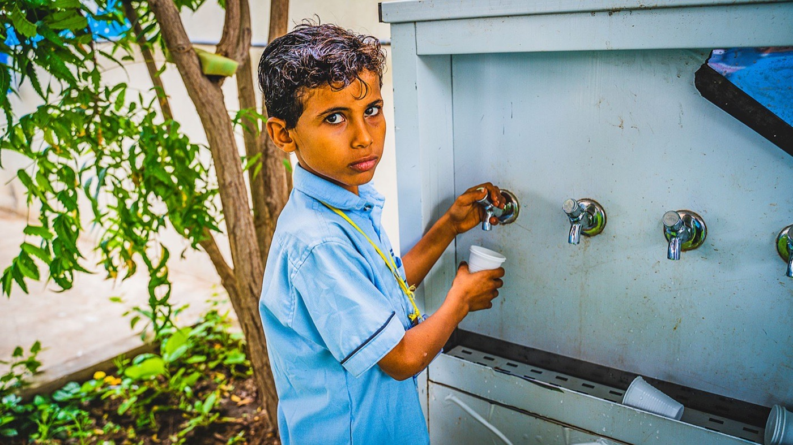
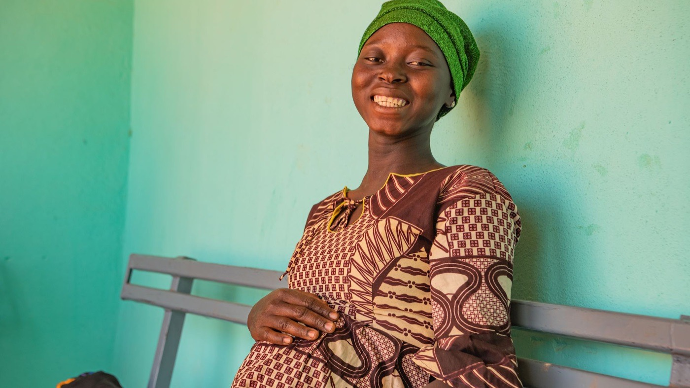
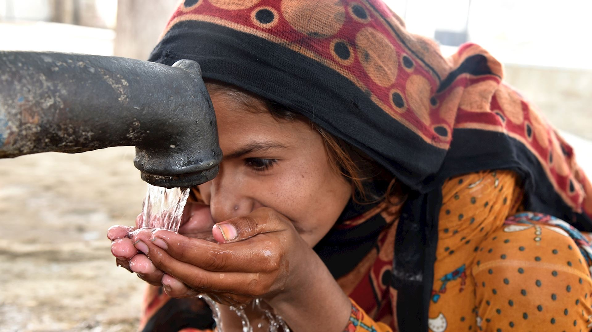

- 25 € : le dépistage et un mois de traitement nutritionnel pour un enfant
- Équipe somalienne à Mogadiscio depuis 2011, maternités dans les camps
- Éligible à la zakat · reçu fiscal immédiat, 66 % déductible
La situation en Somalie aujourd'hui
La Somalie enchaîne les chocs climatiques sur fond de conflit. Après trois saisons des pluies insuffisantes, l'analyse IPC de septembre 2026 compte 5,4 millions de personnes en insécurité alimentaire aiguë pour la fin de l'année, dont 1,5 million en situation d'urgence, et signale un risque de famine dans le district de Burhakaba, région de Bay. Près de 1,9 million d'enfants souffrent de malnutrition aiguë. Depuis le début de 2026, la sécheresse a chassé plus de 60 000 personnes de leurs terres, dont 26 000 arrivées dans les camps de Baidoa.
Le paradoxe de cet automne : les pluies d'octobre à décembre, renforcées par El Niño, risquent d'inonder les camps et de propager le choléra, sans rendre aux éleveurs les troupeaux perdus. Le plan d'aide des Nations unies, 852 millions de dollars pour 2,4 millions de personnes, n'était financé qu'à 14 % en avril. Nos équipes concentrent leurs moyens sur l'eau, la nutrition des enfants et les maternités des camps. Cette page est mise à jour chaque mois.

Urgence Somalie
50 € vous coûtent 17 € après réduction d'impôt de 66 %.
Je donne pour la SomalieÉligible à la zakat · reçu fiscal immédiat · paiement sécurisé
Comment l'aide arrive-t-elle en Somalie ?
Muslim Hands est présente en Somalie depuis 2011, avec un bureau à Mogadiscio et une équipe entièrement somalienne. Les denrées, le carburant des camions-citernes et les médicaments sont achetés sur les marchés de la capitale ; les distributions ont lieu dans les camps de déplacés de la région de Banadir et dans les villages touchés par la sécheresse, sur listes établies avec les comités de camp et les anciens. Nos maternités sont installées dans les camps eux-mêmes, là où les femmes accouchent sans soins.
Collecte en France
Votre don rejoint le fonds Urgence Somalie, tracé séparément. Les dons zakat sont fléchés vers les bénéficiaires éligibles.
Achat
Riz, farine, huile et dattes, carburant des camions-citernes, compléments nutritionnels et médicaments achetés à Mogadiscio.
Distribution
Eau par camion, colis mensuels, dépistage nutritionnel et consultations dans les camps, par notre équipe somalienne.
Compte rendu
Listes, photos et factures remontent à Paris ; le bilan est publié dans les actualités et le rapport annuel.

Ce que fait Muslim Hands sur place
Eau par camion et puits réhabilités
Camions-citernes vers les camps et remise en état de puits dans les zones de sécheresse, pour que les familles n'aient pas à partir.
Nutrition des enfants
Dépistage de la malnutrition aiguë, aliments thérapeutiques et suivi mensuel des enfants de moins de cinq ans.
Maternités dans les camps
Suivi de grossesse, accouchements sécurisés et soins du nouveau-né dans les camps de déplacés autour de Mogadiscio.
Colis alimentaires
Riz, farine, huile, sucre et dattes pour un mois, remis aux familles déplacées inscrites avec les comités de camp.
Hygiène et latrines
Construction de latrines et kits d'hygiène dans les sites de déplacés de Banadir, contre le choléra.
Orphelins de Mogadiscio
Parrainage d'enfants ayant perdu leurs parents dans le conflit ou la sécheresse : nourriture, école, santé.
Que finance mon don pour la Somalie ?
Les montants ci-dessous sont nos coûts réels d'achat et de distribution à Mogadiscio, revus chaque trimestre.
| Don | Ce qu'il permet | Fiche |
|---|---|---|
| 25 € | Le dépistage et un mois de traitement nutritionnel pour un enfant malnutri | Donner |
| 50 € | Un colis alimentaire pour une famille pendant un mois | Donner |
| 100 € | De l'eau potable pour dix familles pendant un mois, par camion-citerne | Donner |
| 150 € | Un accouchement sécurisé et le suivi de la mère et du bébé dans une maternité de camp | Donner |
| 39 € / mois | Le parrainage d'un orphelin de Mogadiscio | Parrainer |
Pour un geste qui dure, un puits dans un village du Bas-Shabelle évite à ses habitants de rejoindre les camps à la prochaine sécheresse.
Bilan de l'action en Somalie
Depuis 2011, le réseau Muslim Hands a fourni de l'eau potable, des soins et une aide alimentaire à des millions de Somaliens, ouvert des maternités dans les camps de Mogadiscio, réhabilité des puits dans les régions de sécheresse et construit des latrines dans les sites de déplacés de Banadir. Le bilan chiffré de l'année est publié dans le rapport annuel et dans les actualités.

« Nous avons perdu toutes nos chèvres. Au camp, l'eau arrive par camion et ma petite-fille est pesée chaque mois : elle a repris du poids. »Halima, grand-mère de six enfants, camp de Banadir, septembre 2026
Votre don pour la Somalie et vos impôts
Muslim Hands France est une association d'intérêt général : votre don pour la Somalie ouvre droit à une réduction d'impôt sur le revenu de 66 %, dans la limite de 20 % du revenu imposable. 50 € vous coûtent 17 €, 150 € vous coûtent 51 €. Le reçu fiscal est envoyé par e-mail immédiatement après le paiement. Votre don peut aussi être votre zakat al maal. Tout savoir sur la déduction fiscale.

Questions fréquentes sur le don pour la Somalie
Où intervenez-vous en Somalie ?
À Mogadiscio et dans les camps de déplacés de la région de Banadir, où Muslim Hands est présente depuis 2011, et dans les zones rurales touchées par la sécheresse des régions de Bay et du Bas-Shabelle, avec une équipe somalienne.
Que finance mon don pour la Somalie ?
25 € le dépistage et un mois de traitement nutritionnel pour un enfant, 50 € un colis alimentaire pour un mois, 100 € de l'eau potable pour dix familles pendant un mois, 150 € un accouchement sécurisé et le suivi de la mère, 39 € par mois le parrainage d'un orphelin de Mogadiscio.
Sécheresse ou inondations : quelle est la situation en 2026 ?
Les deux. Après trois saisons des pluies insuffisantes, 5,4 millions de Somaliens sont en insécurité alimentaire aiguë pour la fin de 2026, dont 1,5 million en situation d'urgence, et un risque de famine est signalé dans le district de Burhakaba. Les pluies d'octobre à décembre, renforcées par El Niño, menacent en plus d'inonder les camps. Nos équipes préparent les deux scénarios.
Comment l'aide arrive-t-elle en Somalie ?
Par Mogadiscio, où notre équipe somalienne achète les denrées, le carburant des camions-citernes et les médicaments sur les marchés locaux. Les distributions se font sur listes dressées avec les comités de camp, les maternités sont ouvertes dans les camps eux-mêmes.
Mon don pour la Somalie est-il déductible des impôts ?
Oui, à 66 % de son montant, dans la limite de 20 % du revenu imposable : 50 € vous coûtent 17 €. Le reçu fiscal est envoyé immédiatement par e-mail.
Puis-je donner ma zakat pour la Somalie ?
Oui. Les familles déplacées par la sécheresse, les veuves et les orphelins font partie des ayants droit de la zakat. Cochez la case « Zakat » lors du don.

De l'eau, avant la prochaine sécheresse.
100 € donnent de l'eau potable à dix familles pendant un mois dans les camps de Banadir.
Offrir de l'eau potable